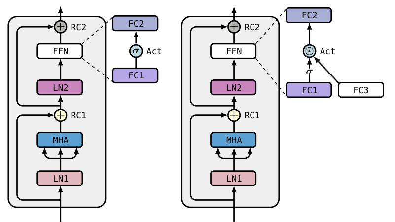
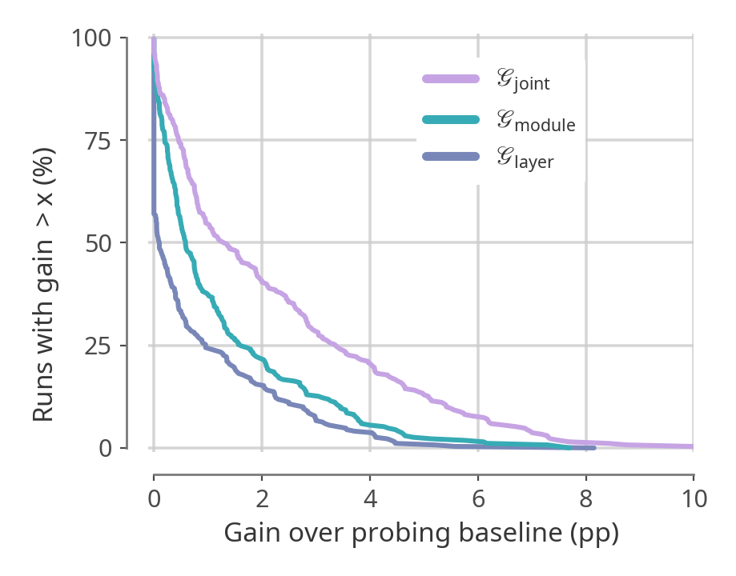
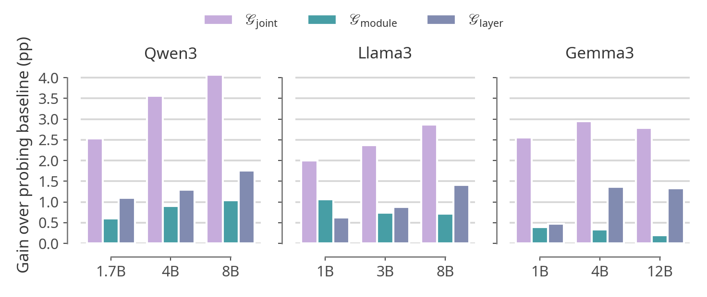
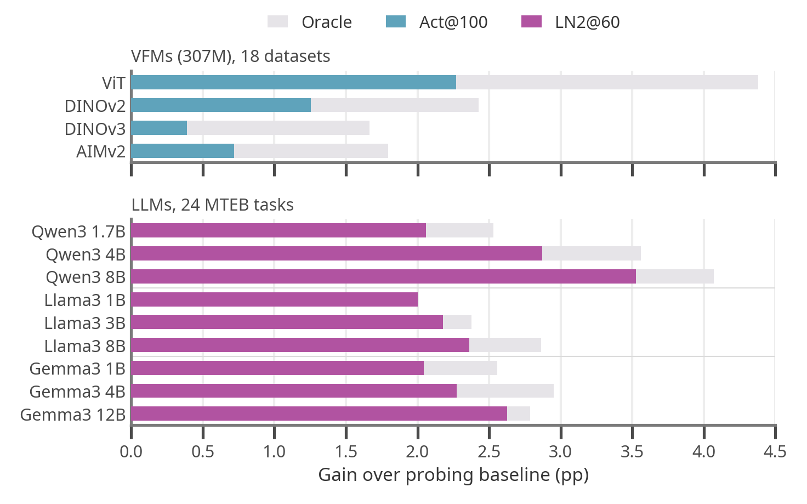
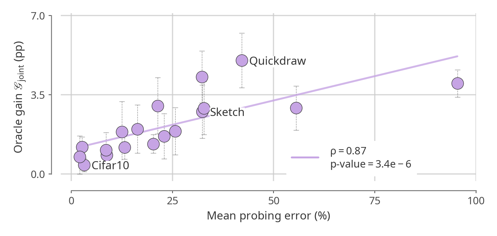

Probing Transformer Representations
Layer by Layer, Module by Module
Abstract
Which representation should be probed in a transformer-based foundation model? Recent work shows that the standard practice of probing the final layer is often suboptimal, as intermediate layers can provide better features. Yet, representations are still largely studied along depth alone, treating each transformer block as an atomic unit. In this work, we analyze transformer representations layer by layer, module by module. Through more than 144,000 linear probing evaluations of vision foundation models (VFMs) and large language models (LLMs), we show that layer and module choices should be considered jointly: the best layer-module pair yields substantially larger gains over the final-layer residual stream than the best layer with the residual stream fixed. Moreover, module performance can vary substantially across layers, showing that useful representations cannot be characterized by depth alone. Building on these findings, we evaluate simple fixed probing strategies: the final-layer feedforward activation (Act@100) for vision and the second normalization layer at 60% depth (LN2@60) for language. These strategies improve over the probing baseline in a majority of evaluations and recover, on average, 42% and 86% of the gains from probing the best layer-module pair for vision and language, respectively. For VFMs, these gains increase with the transfer difficulty between pretraining and downstream data.
What does standard probing read?

- LN1
- first normalization
- MHA
- multi-head attention
- RC1
- residual stream after attention
- LN2
- second normalization
- FC1
- first linear layer of the FFN
- Act
- FFN activation
- FC2
- output of the FFN
- RC2
- residual stream at the block output
A transformer block exposes eight intermediate representations. Standard probing reads one of them, RC2, at the last layer: we call it RC2@100. We probe all eight at every layer, in a single forward pass, with linear probing on 18 image datasets for vision foundation models (VFMs) and on the 24 classification tasks of MTEB(Multilingual) for LLMs.
Each location is compared to standard probing. The oracle gain is the accuracy of the best layer-module pair minus that of RC2@100, in percentage points (pp). It is an upper bound: finding that pair needs an exhaustive search and test labels.
How much does standard probing leave on the table?
- 260 / 270
- VFM model-dataset pairs where another location beats standard probing
- +2.2 pp
- average oracle gain in VFMs, up to +10.5 pp
- +2.9 pp
- average oracle gain in LLMs, from +2.0 to +4.1 pp across the 9 models
The gain comes from choosing the layer and the module together. Searching over both beats searching over the layers of the residual stream or over the modules of the last layer, in both modalities. In LLMs, the residual stream is never part of the best pair.


Where are the better representations?
For vision, mostly in the FFN activation of the last layers: Act is in the best pair for 64.8% of the model-dataset pairs, against 5.9% for the residual stream. For language, in the second normalization at intermediate depth: LN2 is in the best pair for 8 of the 9 LLMs, at 48% to 78% of the depth.
Try it yourself. Pick a model, then click any cell, or use the layer and module controls, to compare that location with standard probing, our fixed rule and the best location.
Can we get there without search?
Yes, with one fixed location per modality. Act@100, the FFN activation of the last layer, improves over standard probing in 63.7% of the 270 VFM evaluations. LN2@60, the second normalization at 60% depth, improves on 21 of the 24 MTEB tasks and on all 9 LLMs.

On average, Act@100 recovers 41.9% of the oracle gain in VFMs and LN2@60 recovers 86.0% in LLMs, more than the best layer of the residual stream in both cases. Probing the best layer of the same module recovers 78.1% and 99.8%.
When does it matter most?
When the downstream data departs from pretraining. In VFMs, the oracle gain grows with transfer difficulty, measured by the probing error of standard probing (Spearman ρ = 0.87). On the distribution shifts of WILDS and DomainNet, Act@100 improves 25 of the 28 evaluations of the 307M variants, by +1.8 pp on average.

BibTeX
@misc{odonnat2026probing,
title={Probing Transformer Representations Layer by Layer, Module by Module},
author={Ambroise Odonnat and Theo Gnassounou and Laetitia Chapel and Romain Tavenard and Ievgen Redko},
year={2026},
eprint={2611.11531},
archivePrefix={arXiv},
primaryClass={cs.LG},
url={https://arxiv.org/abs/2611.11531},
}